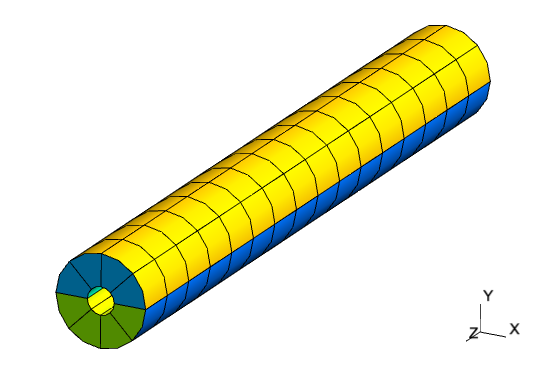
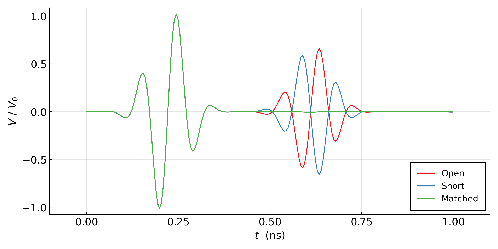
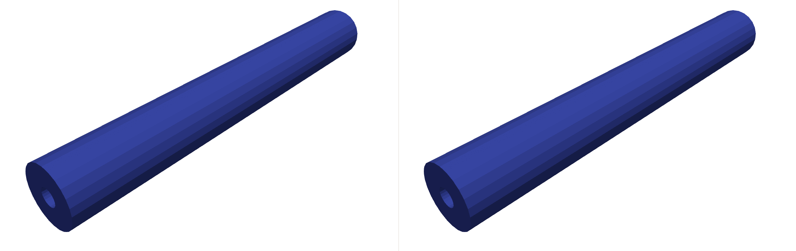

Signal Propagation in a Coaxial Cable
The files for this example can be found in the examples/coaxial/ directory of the Palace source code.
Palace can perform transient electromagnetic modeling, acting as a so-called finite element time domain (FETD) solver. To demonstrate this feature, we consider here the propagation of an electromagnetic pulse through a section of coaxial cable. The model is constructed based on a $50\text{ }\Omega$ RG-401/U coaxial cable [1], with outer and inner conductor diameters of $0.215\text{ in}$ and $0.0645\text{ in}$, respectively. The section length is roughly $1.5\text{ in}$. The Teflon dielectric material has $\varepsilon_r = 2.08$, and we consider $\tan\delta = 4\times 10^{-2}$, a factor of $100$ above the actual value in order to exaggerate losses in the transmission line.
In this example we consider three different configurations of the model, all with a coaxial lumped port excitation at one end of the line: an open termination at the opposite end (coaxial_open.json), a shorted termination(coaxial_short.json), and a matched $50\text{ }\Omega$ lumped port termination (coaxial_matched.json).
The mesh is generated using the Julia code in mesh/mesh.jl and consists of quadratically-curved hexahedral elements, as depicted below. Third-order shape functions are used to approximate the solution.

Each configuration file sets the simulation "Type" to "Transient". The different termination configurations are specified by using a "LumpedPort" with matched impedance for the matched termination, a "PEC" boundary for the shorted termination, leaving no boundary condition specified for the open termination. This last case applies the natural boundary condition for the finite element formulation which is a perfect magnetic conductor boundary condition, enforcing zero tangential magnetic field and thus zero surface current density.
The excitation pulse is configured under config["Solver"]["Transient"]. Here, we use a modulated Gaussian pulse shape, with time dependence given by the expression
\[g(t) = \sin{\left[\omega(t-t_0)\right]} e^{-\frac{(t-t_0)^2}{2\tau}^2} \,.\]
For this simulation, we use a center frequency $f = \omega/2\pi = 10\text{ GHz}$ and pulse width $\tau = 0.05\text{ ns}$. The offset $t_0$ is automatically chosen by Palace in order to smoothly ramp up the excitation from the rest initial condition. Time integration uses the second-order implicit Generalized-$\alpha$ scheme with a uniform time step $\Delta t = 5\times 10^{-3}\text{ ns}$, and the solution is computed for the interval $t\in[0.0,1.0]\text{ ns}$. The electric and magnetic field solutions are sampled every $10$ time steps for visualization.
Below, we plot the time histories of the port voltage at the excited coaxial lumped port for the three simulation cases.

We can observe that as expected, the matched termination absorbs the incident waveform nearly perfectly, while it is reflected with the same polarity for the shorted termination and opposite polarity for the open termination (phase shifted by $\pi$). Furthermore, the reflected wave is noticably attenuated due to the material loss of the transmission line dielectric.
Lastly, an animation of the signal propagation for the matched (left) and shorted (right) simulations, constructed using the saved fields, is shown below.

References
[1] D. M. Pozar, Microwave Engineering, Wiley, Hoboken, NJ, 2012.